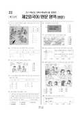

문제지


시험지를 먼저 풀어 보세요. 등급컷·표준점수·난이도는 흐리게 가려 뒀어요.
정답 변경 없음
이의신청 1문항 · 평가원 상세 답변 1문항
평가원 답변
본 문항의 목적은 한시의 기초적인 형식과 특징을 알고 있는지 평가하는 것입니다.대우(빠\)는 한시의 중요한 형식적 특징 중 하나입니다.1. 한시의 '대우법(빨\프)'에 대하여 '교육인적자원부 고시 제2007-79호에 따른 고등학교 교육과정 해설08 한문'(32쪽)에서는 “대우법은 한시에서 나란히 이어지는 두 구(4)가 내용상으로나 어법상으로 서로 짝을 이루도록 하는 것을 말한다. 대우를 이루는 두 구는 앞의 구를 출구(0149),뒤의 구를 대구(빠)라고 부른다. 율시는 함련(8840)과 경련(800)에서 반드시 대우를 이루어야하지만, 절구는 기구(볼시)와 승구(49), 전구(640)와 결구(\)에서 대우를 이루기도 한다.”라고 설명하고 있습니다.또 김상홍 교수는 『한시의 이론。 (고려대학교출판부, 1997, 122129면)에서 “대우는 수사법의하나로 문학작품을 더욱 미려(쫓빼)하게 하는 데 목적어 있다. 대우는 시뿐만 아니라 부006)ㆍ사(8)ㆍ곡(비) 등에서 일찍부터 널리 사용되었다. 대우란 상하의 구(48)가 서로 짝이 되게 수사(00)하는 것을 말하는데, 대우의 방법은 1 자의상칭법(ㅜ초써태로), 2 자성상응법(ㅜ랄씨때는),@ 평측상협법(550.48마른) 등어 있다. 자의(*%)가 상칭되게 하는 자의상칭법 중에 '양사상우(01344848)'는 상구(Ｌ)에 '춘화(즘76)'를 쓰면 하구(ㅠ0)는 '추실((앨)'을 쓰는 것으로 1련08)상하구의 자의가 고르게 서로 짝이 되게 하는 대우법이다."라고 설명하였습니다.이와 같이 대우(빨)는, 수사학적 기교의 일종으로 '서로 같은 자수(ㅜ\0)', '서로 동일한 결구(앵\), '서로 관련 있는 의의(잘조)'를 가진 두 구(90)나 사조(울뻔)가 대칭적으로 나열되어 있는 것을 의미합니다.자수(%뿔)ㆍ사성(0따)-결구(\\)ㆍ음조(즘렐) 등의 4가지 기준을 준수하여 완전히 서로 대칭하며 중복되는 자안(*)이 없는 경우를 '엄대(@뿌)'라고 하고 그렇지 않은 경우를 '관대(@싸)'라고 합니다. 일반적으로 고대 중국 문법에서 흔히 사용되는 것은 '엄대'이며 '관대'는 현대 중국문법에서 주로 사용됩니다. 또 대우는 상하 구절의 어의(루좋) 관계에 따라 정대(파)'반대(퍼)'천대(뿌파):당구대(습끼파) 등으로 나됩니다.2. 「사작대사전(#(6ㅅ취빼)』 (쁘쿠즈휘쁘비따, 1991, 199쪽.)에서는 엄대(@팍)이면서 천대(투팍)중의 '조건((%\)' 관계의 대우를 이루고 있는 시로 이신(수빼)의 「민농(병쁘)」 을 예시하였습다. '천대(뿌파) 는 일명 '유수대(0팡)로, 상구([9)와 하구(『9) 사이가 인과(저봇)ㆍ조건(자 )ㆍ숭접(7) 등의 관계를 이루고 어의가 연관을 가지며 서로 께어지듯 대우를 이루는것이 구름이 흐르고 물이 흐르듯 한 것을 의미합니다. '즘세ㅡ차뜻, 406<풀뜰구 의 대우 구조를분석하면 계절의 의미를 나타내는 명사인 '춘(즈)'과 '추(#0)', 동사인 '종(체)'과 '수(46)', 수사인'일(-ㅡ-)'과 '만(폼)', 명사인 '림(60)'과 '과(뜰)', '속(뜻)'과 '자(ㅜ)'가 대칭되어 서로 대우를 이룬는 사실을 알 수 있습니다.3. 「민농(\쁘)」 시의 '과자(뻔구)에서 '자(구)'는 '열매'를 의미합니다. 「한어대사전(즈룰그히비): (쓴4, 프룸그기삐비000, 1986, 164쪽.)의 '자(+)'의 의미를 풀이한 23번째 항목에서 “식물의종자나 과실[044000체ㅜ봇쓸]"이라고 하면서 그 예로 “탕수세 < 릉스-ㅡ : 즈헨ㅡ산뜻,뿔%구.”를 제시하고 있습니다. 또 『한어대자전(뿌품ㅜ프)1(2권, 페규콤41000 ㆍ0띠11@0콤비따까, 1988, 1007쪽)에서도 '자(+)'의 의미를 풀이한 19번째 항목에서 “식물의 과실 혹은 종자04500 봇알미제 구]"라고 하면서 그 예로 “탐주애 <썸트-갑> 2: 쥬젠ㅡ지프, 404(품뜨구"를제시하였습니다.4. 설사 '과자(08ㅜ)'의 '자(ㅜ)'를 접미사로 볼 경우에도, (가)의 제1구와 제2구는 대우를 이루고 있습니다. 장정체(@ㅠ뿔)ㆍ장정정(뜨뿌뿌)이 지은 『시학(름뿌)((출펀때자데좀해, 1975)에서는 대우를 20종류로 분류하였는데, 이중 43 혼괄대(팬뷰빨)는 상하구(ㅜ+시)에서 자면(ㅜ0)의 공정()을 구하는 것이 아니라, 2구를 통틀어 연관된 의사가 있는 대우법을 가리킨다고 하였습니다. 이에 따르면 “츄센-ㅡ차뜻, 00옴떠구"에서 '속(뜻)'과 '자(ㅜ)'는 대(쌀)가 되지 않지만,'일립속(ㅡ싸뜻)'과 '만과자(품※ㅜ)'는 곡식과 관련된 것으로 대(빠)가 됩니다. 또 '춘종(츠제)'과'추수(\046)'도 모두 곡식과 관련된 것으로 대(싸)가 됩니다.5. 이상에서 살펴본 바와 같이 (가)의 제1구와 제2구는 대우를 이루고 있습니다. 그러므로 <보기>에서 “ㄱ. (가)의 제1구와 제3구는 대우를 이룬다.”라는 설명은 옮기 때문에, 정답은 입니다.따라서 이 문항은 오류가 없습니다.
스캔 원문을 글자로 옮긴 것이라 오탈자가 있을 수 있어요.
시험 전체 관련 보도 4건은 2011학년도 대학수학능력시험 회차 페이지에 모아 두었어요.
발행 기관: 한국교육과정평가원(KICE). 파일 위치: 이 사이트가 보관한 사본. 저작권은 발행 기관에 있습니다. 원본과 다르거나 게시 중단이 필요하면 연락처로 알려 주세요. 등급컷 출처 구분은 데이터 원칙에서 설명합니다.